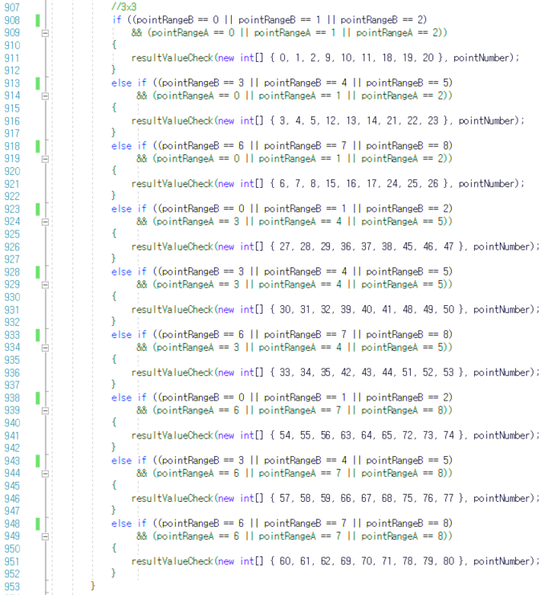

1.자기소개
1.자기소개

한지수
Introduce
안녕하세요. 열정가득한 93년생
신입개발자 한지수입니다.
서울시 도봉구 도봉동에 살고 있고
좋아하는 운동은 테니스입니다.
신입개발자 한지수입니다.
서울시 도봉구 도봉동에 살고 있고
좋아하는 운동은 테니스입니다.
개인정보
이름
한지수
생년월일
1993.04.11
전화번호
010-8273-6278
메일
wltnqhd12@naver.com
거주
서울시 도봉구 도봉동
Skill
- JAVA, JSP, Android
- HTML5, CSS, JAVASCRIPT, JQUERY
- ORACLE, MSSQL, SQLSERVER, PARSE SERVER
- SPRING, JDBC, MYBATIS, AJAX
- UNITY, C#
Career
- 2017.10 ~ 2018.05 KH정보교육원 '[NCS]응용SW엔지니어 및 DB엔지니어 양성과정'수료
- 2017.10 ~ 2018.05 KH정보교육원 몇기 파이널프로젝트 1등
- 2018.06 ~ 2018.10 (주)엔시큐어 기업부설연구소 개발1팀
- 2018.08 ~ 2018.08 삼성화재 감사대응 추가개발
- 2018.08 ~ 2018.11 농협정보통신 신규개발
- 2018.11 ~ 2018.12 스도쿠 어플개발
2.스도쿠
스도쿠 어플
개발 동기
평소에 스도쿠를 좋아하고 KH정보교육
학원에서 프로젝트하고 남은 시간에 혼자 웹 스도쿠를 만든 경험이 있어서 어플로도 만들고 싶다는 생각에 만들게 되었습니다.
학원에서 프로젝트하고 남은 시간에 혼자 웹 스도쿠를 만든 경험이 있어서 어플로도 만들고 싶다는 생각에 만들게 되었습니다.
개발환경
운영체제
window 10
DATABASE
unity PlayerPrefs
Tool
unity
사용언어
C#
개발기간
2018년 11월 25일 ~ 2018년 12월 30일
구현기능
- 4개의 난이도와 99개의 스테이지 구현
- 각 난이도별로 무한스테이지 구현
- 오답일경우 틀린부분 붉은칸으로 표시
- 저장/이전행위/힌트/지우개/필기모드 구현
- 게임 클리어시 신기록 보이도록 구현
- 배너/전면/리워드 광고 구현
2.스도쿠 UI
메인화면과 게임화면 입니다.
게임 화면에서 연필버튼을 누르면 답이아닌 필기를 할 수 있게 구현했고,지우개 버튼을 누르면 선택된 칸의 답,필기 내용이 지워지도록 하였습니다.
지우개 옆에있는 전구이미지버튼을 누르면 선택한 칸의 답을 힌트로 제공하고, 두번째 눌렀을 경우 동영상광고를 본 후에 힌트가 제공됩니다.
힌트 옆 버튼은 이전버튼으로 누를때마다 이전으로 돌아갑니다.
게임 화면에서 연필버튼을 누르면 답이아닌 필기를 할 수 있게 구현했고,지우개 버튼을 누르면 선택된 칸의 답,필기 내용이 지워지도록 하였습니다.
지우개 옆에있는 전구이미지버튼을 누르면 선택한 칸의 답을 힌트로 제공하고, 두번째 눌렀을 경우 동영상광고를 본 후에 힌트가 제공됩니다.
힌트 옆 버튼은 이전버튼으로 누를때마다 이전으로 돌아갑니다.
2.스도쿠 UI

난이도 별로 99개의 스테이지와 1개의 무한스테이지가 존재합니다.
스테이지 클리어시 스테이지 옆에 기록이되고, 신기록달성마다 변경됩니다.
무한 스테이지는 해당 난이도에 맞게 문제를 자동으로 만들어 사용자에게 제공합니다.
스테이지 클리어시 스테이지 옆에 기록이되고, 신기록달성마다 변경됩니다.
무한 스테이지는 해당 난이도에 맞게 문제를 자동으로 만들어 사용자에게 제공합니다.
2.스도쿠 - 스테이지 코드1
스테이지를 불러오는 메서드입니다.
inputPoint는 스도쿠 문제의 빈칸이 되는 위치를 담고 있는 배열입니다.
Stage메서드의 매개변수로 1~9까지의 숫자와 inputPoint을 넘겨주고 스도쿠 문제를 반환받습니다.
inputPoint는 스도쿠 문제의 빈칸이 되는 위치를 담고 있는 배열입니다.
Stage메서드의 매개변수로 1~9까지의 숫자와 inputPoint을 넘겨주고 스도쿠 문제를 반환받습니다.
2.스도쿠 - 스테이지 코드2
스도쿠 81칸의 문제를 만들어주는 메서드입니다.
매개변수로 1~9의 숫자와 비어있는칸을 담고있는 배열을 받습니다.
hitResultSave메서드는 힌트제공을 위해 문제의 원본 데이터를 저장합니다.
for문을 이용하여 inputPoint배열에 들어있는 숫자와 같은 위치의 값을 0으로 바꿉니다.
0이 게임에서 공백으로 답을 입력해야하는 칸이됩니다.
매개변수로 1~9의 숫자와 비어있는칸을 담고있는 배열을 받습니다.
hitResultSave메서드는 힌트제공을 위해 문제의 원본 데이터를 저장합니다.
for문을 이용하여 inputPoint배열에 들어있는 숫자와 같은 위치의 값을 0으로 바꿉니다.
0이 게임에서 공백으로 답을 입력해야하는 칸이됩니다.
2.스도쿠 - 스테이지 코드3
유니티에서 제공하는 PlayerPrefs클래스를 이용하여 hint0부터 ~ 80까지의 이름으로 정답을 저장하고 있습니다.
PlayerPrefs클래스는 데이터를 자체적으로 저장할 수 있는 데이터베이스같은 클래스입니다.
PlayerPrefs클래스는 데이터를 자체적으로 저장할 수 있는 데이터베이스같은 클래스입니다.
5.스도쿠 - 답체크
답체크는 행단위,열단위,3x3단위로 빈칸이였던 값들을 체크를 하기때문에 이 메서드는 최대 27번 실행됩니다.
검사를 해서 FailCount가 2가되면 검사하는 행,열,3x3에 중복되는 값이 있으므로 실패결과를 저장합니다.
스테이지 생성할때 저장해둔 PlayerPrefs를 이용하여 답체크를 할 수도 있지만 문제의 답이
2개가 될경우가 있기 때문에 답체크 하는 메서드를 만들었습니다.
검사를 해서 FailCount가 2가되면 검사하는 행,열,3x3에 중복되는 값이 있으므로 실패결과를 저장합니다.
스테이지 생성할때 저장해둔 PlayerPrefs를 이용하여 답체크를 할 수도 있지만 문제의 답이
2개가 될경우가 있기 때문에 답체크 하는 메서드를 만들었습니다.
2.스도쿠 - 행 답체크

resultPoint 배열에는 체크해야할 빈칸의 위치가 저장되어있습니다.
첫번째행의 위치값은 0~8이고,두번째는 9~17 세번째는 18~26...입니다.
검사할 위치를 9로 나누면 첫번째행은 0,두번째행은 1,세번째행은 2...가 나오고 pointRangeA 변수에 저장해줍니다. switch 조건문안에서 메서드의 매개변수에 n번째 행의 위치번호들과 검사할 위치번호를 넘겨줍니다.
첫번째행의 위치값은 0~8이고,두번째는 9~17 세번째는 18~26...입니다.
검사할 위치를 9로 나누면 첫번째행은 0,두번째행은 1,세번째행은 2...가 나오고 pointRangeA 변수에 저장해줍니다. switch 조건문안에서 메서드의 매개변수에 n번째 행의 위치번호들과 검사할 위치번호를 넘겨줍니다.
2.스도쿠 - 열 답체크
n은 0부터 8까지 증가하고,열의 위치값은 9n + pointRangeB입니다.
첫번째 열의 위치값은 9n + 0, 두번째는 9n + 1, 세번째는 9n + 2...입니다
검사할 위치를 9로 나누면 나머지값이 첫번째열은 0,두번째열는 1, 세번째열은 2...가 나오고 pointRangeB 변수에 저장해줍니다. switch 조건문안에서 메서드의 매개변수에 n번째 열의 위치번호들과 검사할 위치번호를 넘겨줍니다.
첫번째 열의 위치값은 9n + 0, 두번째는 9n + 1, 세번째는 9n + 2...입니다
검사할 위치를 9로 나누면 나머지값이 첫번째열은 0,두번째열는 1, 세번째열은 2...가 나오고 pointRangeB 변수에 저장해줍니다. switch 조건문안에서 메서드의 매개변수에 n번째 열의 위치번호들과 검사할 위치번호를 넘겨줍니다.
2.스도쿠 - 3x3 답체크

3x3의 답체크는 앞에 구했던 pointRangeA(행),pointRangeB(열)값을 가지고 3x3영역 위치를 구합니다.
현재 체크해야할 위치가 0,1,2행 이면서 0,1,2열일 경우 좌측상단 3x3영역이고 resultValueCheck메서드의 매개변수에 좌측상단 3x3영역 위치값 9개를 넘겨줍니다.
0,1,2행이면서 3,4,5열일 경우 상단가운데이고 0,1,2행이면서 6,7,8열일경우 우측상단입니다.
이렇게 현재 체크하는 위치의 행과열의 값을 가지고 3x3영역위치를 구합니다.
현재 체크해야할 위치가 0,1,2행 이면서 0,1,2열일 경우 좌측상단 3x3영역이고 resultValueCheck메서드의 매개변수에 좌측상단 3x3영역 위치값 9개를 넘겨줍니다.
0,1,2행이면서 3,4,5열일 경우 상단가운데이고 0,1,2행이면서 6,7,8열일경우 우측상단입니다.
이렇게 현재 체크하는 위치의 행과열의 값을 가지고 3x3영역위치를 구합니다.
3.엔시큐어 - 삼성화재
삼성화재 감사대응 기능추가
개발 목표
관리자가 관리자 페이지에서 하는 모든
행위를 이력으로 남기기 위한 기능 추가
행위를 이력으로 남기기 위한 기능 추가
개발환경
운영체제
window
JAVA
JDK 1.8
database
oracle
Tool
Eclipse, SQL Developer
사용언어
JAVA,JSP,HTML,JS
WAS
Jboss
개발기간
2018년 8월 1일 ~ 2018년 8월 18일
구현기능
- 관리자 행위 로그 이력 DB저장
- 비밀번호 변경 UI추가
- 로그인 이력 UI추가
- 관리자 행위 이력 UI추가
- 로그인 5회 실패시 5분간 잠금
- 비밀번호 3개월 이상 미변경시 알람
3.엔시큐어 - 농협정보통신
농협정보통신 신규개발
개발 목표
OS,DB,AD 계정을 통합 관리하기 위한 개발
개발기간
2018년 8월 20일 ~ 2018년 10월 31일
개발환경
운영체제
window 10
JAVA
JDK 1.8
database
MSSQL
Tool
Eclipse, MSSM
사용언어
JAVA,JSP,HTML,JS
WAS
Tomcat 8.5
구현기능
- 결재라인 정직원 3단계/협력직 4단계로 변경
- AD계정 신청/삭제 UI 추가
- AD계정 사용권한 신청/삭제 UI추가
- AD 계정생성, 사용권한 기능개발 (제품 연동)
- NHWith메신저 연동
- SGN 접근통제,PM연동
- 고스트,브로큰 계정 탐지 및 관리
- 보안관리자 추가
- OTP키 등록, 변경
3.엔시큐어
삼성화재
삼성화재에서 제가 한 기능은 관리자 행위 로그 이력을 DB에 저장하기 위해
하나의 추상클래스와 그것을 상속받는 여러 클래스를 각각의 기능에 맞게 오버라이딩 하여 사용했습니다.
해당 기능(행위)이 실행되는 코드에 메서드 한줄을 끼워넣었습니다.
그리고 비밀번호 변경,로그인 이력,관리자 행위 이력 UI를 만들었습니다.
그리고 비밀번호 변경,로그인 이력,관리자 행위 이력 UI를 만들었습니다.
농협정보통신
결재라인은 정규직은 팀장 - 시스템관리자 - 보안관리자(3단계), 협력직은 팀장 - PM - 시스템관리자 - 보안관리자(4단계)로 변경했습니다.
제품중 AD계정 생성/삭제는 있었지만 UI로 만들어 진게 없어서 UI를 만들고 기존에
있는 OS계정 생성/삭제/사용권한 신청 JAVA코드을 참고하여 비슷하게 코딩하였습니다.
추가로 보안관리자 등록/삭제, AD사용권한 신청/삭제 UI를 만들었고 기타 여러 오류들을 수정했습니다.
제품중 AD계정 생성/삭제는 있었지만 UI로 만들어 진게 없어서 UI를 만들고 기존에
있는 OS계정 생성/삭제/사용권한 신청 JAVA코드을 참고하여 비슷하게 코딩하였습니다.
추가로 보안관리자 등록/삭제, AD사용권한 신청/삭제 UI를 만들었고 기타 여러 오류들을 수정했습니다.
4.Final프로젝트
LIFE PLUS
개발 목표
스타일링이 필요한 일반인과 전문가들을 매칭해주어서 일반인은
자신의 스타일을 전문가는 고객을 찾을 수 있는 웹사이트 구축
개발환경
JAVA
JDK 1.8
운영체제
window 10
Spring
4.3.7.RELEASE
Spring-security
4.2.3.RELEASE
Tool
Eclipse, SQL Developer
사용언어
JAVA,JSP,HTML,JS
WAS
Apache Tomcat 8.5
개발기간
2018년 4월 1일 ~ 2018년 5월 3일
구현기능
- 스프링 시큐리티를 사용한 로그인
- 다음 API를 이용한 주소검색/변경
- 구글맵 API를 이용한 매장위치 변경/표시
- 게시물 좋아요
4.Final프로젝트 - 메인페이지

메인페이지에는 전문가들이 올린 포트폴리오가 뜨도록 하였습니다.
저희 프로젝트에서 포트폴리오는 각 분야의 전문가들이 자신의 업적을 올림으로써
고객을 끌어들이는 홍보수단이 됩니다.
저희 프로젝트에서 포트폴리오는 각 분야의 전문가들이 자신의 업적을 올림으로써
고객을 끌어들이는 홍보수단이 됩니다.
4.Final프로젝트 - 시큐리티 코드
스프링에서 제공하는 시큐리티를 사용하여 jsp페이지에 접근 권한을 xml파일로 설정했습니다.
main페이지는 모든사람이 접근할 수 있게 permitAll권한을 주었고,다른 모든 페이지는 ROLE_USER권한이 있는 사람만 접근 할 수 있게 했습니다.
접근하게 될경우 35번째 줄에 설정된 preludebUserService이름으로 선언한 컨트롤러를 찾아갑니다.
main페이지는 모든사람이 접근할 수 있게 permitAll권한을 주었고,다른 모든 페이지는 ROLE_USER권한이 있는 사람만 접근 할 수 있게 했습니다.
접근하게 될경우 35번째 줄에 설정된 preludebUserService이름으로 선언한 컨트롤러를 찾아갑니다.
4.Final프로젝트 - 시큐리티 코드
현재 id,pw,권한을 시큐리티에 넘겨주면 허용
로그인을 시도하면 해당 클래스로 와서 로그인 허용여부를 결정합니다.
PreludeUser는 스프링시큐리티에서 제공하는 User클래스를 상속받은 클래스입니다.
로그인이 허용될경우 success-handler로 이동하고,거부될경우 failure-handler로 이동합니다.
PreludeUser는 스프링시큐리티에서 제공하는 User클래스를 상속받은 클래스입니다.
로그인이 허용될경우 success-handler로 이동하고,거부될경우 failure-handler로 이동합니다.
4.Final프로젝트 - 다음/구글맵 API 화면

다음 API를 이용하여 주소를 등록하면 전문가의 경우 해당 주소의 위도와 경도를 구해서 db에 저장합니다.
전문가 매장 위치를 보여줄때 구글맵 API를 이용하여 저장된 위도와 경도를 가지고 해당 위치를 표시합니다.
전문가 매장 위치를 보여줄때 구글맵 API를 이용하여 저장된 위도와 경도를 가지고 해당 위치를 표시합니다.
4.Final프로젝트 - 구글맵 API 코드

다음 api로 주소를 선택하는 순간 initialize함수를 실행 시켜 줍니다.
함수 안에서 구글이 정의해놓은 함수를 이용하여 위도와 경도를 구합니다.(Line.354~355)
경도와 위도를 form태그 안에 미리 선언해둔 input 태그에 값을 넣어줍니다.(Line.366~367)
함수 안에서 if/else로 비교하는 이유는 몇몇 신주소가 값이 없어 위도와 경도를 구할수가 없기 떄문에 값이 없을 경우는 구주소를 선택하게 했습니다.
함수 안에서 구글이 정의해놓은 함수를 이용하여 위도와 경도를 구합니다.(Line.354~355)
경도와 위도를 form태그 안에 미리 선언해둔 input 태그에 값을 넣어줍니다.(Line.366~367)
함수 안에서 if/else로 비교하는 이유는 몇몇 신주소가 값이 없어 위도와 경도를 구할수가 없기 떄문에 값이 없을 경우는 구주소를 선택하게 했습니다.
4.Final프로젝트 - 좋아요

좋아요를 누른 경우 하트가 색이칠해지고 LIKE테이블에 누른 회원 ID와 포트폴리오번호가 저장됩니다.
다시 좋아요를 누를 경우 하트색이 없어지고 LIKE테이블에서 데이터도 삭제 됩니다.
다시 좋아요를 누를 경우 하트색이 없어지고 LIKE테이블에서 데이터도 삭제 됩니다.
5.Semi프로젝트
사내인트라넷
개발 목표
- 신속하고 편리한 사내 업무의 통합 관리 위한 인트라넷 환경을 구축
개발환경
운영체제
window 10
JAVA
JDK 1.8
database
oracle
Tool
Eclipse, SQL Developer
사용언어
JAVA,JSP,HTML,JS
WAS
Apache Tomcat 8.5
개발기간
2018년 1월 26일 ~ 2018년 2월 22일
구현기능
- 팀장만 승인가능한 전자결재 기능 구현
- 하루 1회 퇴직사원 재직상태 퇴사로 변경
- 사진첩 구현
5.Semi프로젝트 - 메인 화면
KH정보교육원 학원에서 첫 프로젝트 사내 인트라넷 메인 화면입니다.
5.Semi프로젝트 - 전자결재 화면
추가하기 버튼을 클릭하면 입력란이 한줄 더 생기고, 입력란 우측 -를 클릭하면 해당 줄은 삭제가 됩니다.
날짜 선택은 캘린더 API를 이용하여 하여 편리하게 만들었습니다.
날짜 선택은 캘린더 API를 이용하여 하여 편리하게 만들었습니다.
5.Semi프로젝트 - 전자결재리스트 화면
결재라인은 팀장만 승인할 수 있게했고, 팀원은 승인전 요청을 취소할 수 있습니다.
리스트는 팀장은 자신의 부서모든 요청이 나타나고, 팀원은 자신의 요청만 나타납니다.
리스트는 팀장은 자신의 부서모든 요청이 나타나고, 팀원은 자신의 요청만 나타납니다.
5.Semi프로젝트 - 전자결재 사직 코드
24시간마다 퇴직한직원이 있는지 확인후 상태를 퇴직으로 변경되게끔 했습니다.
서버 첫스타트시 한번 실행이 되고 Thread객체의 sleep메서드와 무한루프를 이용하여 24시간마다 실행되게 만들었습니다.
서버 첫스타트시 한번 실행이 되고 Thread객체의 sleep메서드와 무한루프를 이용하여 24시간마다 실행되게 만들었습니다.
5.Semi프로젝트 - 사진첩
사진첩은 프로젝트 종료직전 시간이 남아서 이틀동안 간단하게 구현했습니다.
사진등록/삭제는 관리자만 가능하며, 사진을 클릭하면 모달창으로 확대되게 만들었습니다.
사진추가와 사진삭제 사이에 있는 버튼으로 삭제모드를 On/Off 할 수 있고, 삭제모드시 사진을 누를 경우 위 사진과 같이 사진에 붉은 테두리로 표시해줍니다.
사진을 선택후 사진삭제 버튼을 누르면 붉은 테두리로 표시된 모든 사진은 삭제 됩니다.
사진등록/삭제는 관리자만 가능하며, 사진을 클릭하면 모달창으로 확대되게 만들었습니다.
사진추가와 사진삭제 사이에 있는 버튼으로 삭제모드를 On/Off 할 수 있고, 삭제모드시 사진을 누를 경우 위 사진과 같이 사진에 붉은 테두리로 표시해줍니다.
사진을 선택후 사진삭제 버튼을 누르면 붉은 테두리로 표시된 모든 사진은 삭제 됩니다.
5.Semi프로젝트 - 사진첩 코드
자바스크립트의 trigger함수를 이용하여 파일을 선택한 즉시 파일이 전송되어 저장되게 만들었습니다.
사진삭제시 선택된 사진만큼 반복문을 돌려 콤마(,)로 묶어서 삭제할 사진의 id값을 보내고 삭제합니다.
사진삭제시 선택된 사진만큼 반복문을 돌려 콤마(,)로 묶어서 삭제할 사진의 id값을 보내고 삭제합니다.